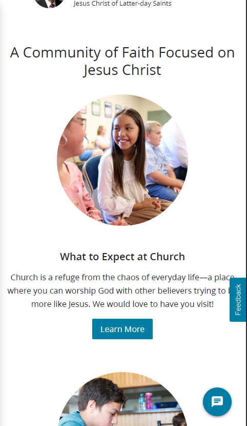
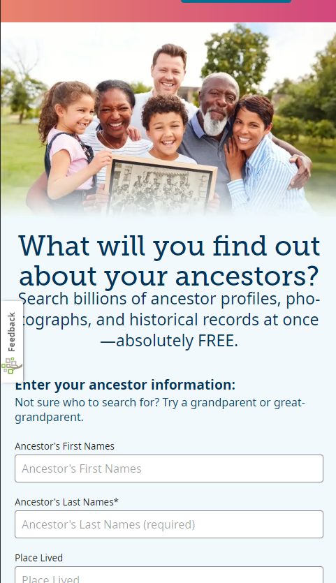

Proximity
The Church of Jesus Christ of Latter-Day Saints churchofjesuschrist.org This website exemplifies proximity by putting images close together with captions. This shows that they are tied together. in this example, the caption "What to expect at church" isn't only tied to gether with the Caption above it, but the link below it.
Rule of Thirds
AmazonAmazon.com
This site shows the Rule of thirds by splitting the products it shows in three distinct columns. On the left most, recently viewed items, and half of an ad for spongebob. Column two, zorro and the other half of spongebob, the third, some ads. it then has three rows going down the page.
White Space
Family SearchFamilySearch.org 